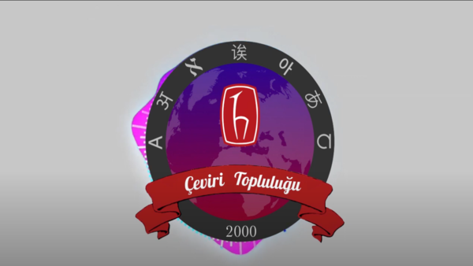
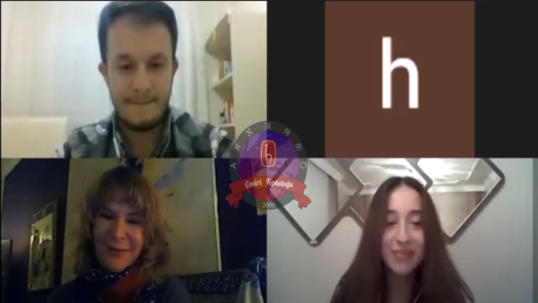
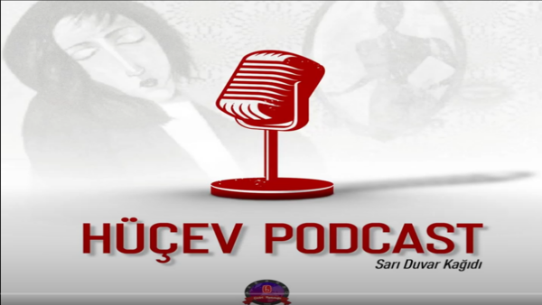

Afette Rehber Çevirmenlik
Afet esnasında rehber çevirmenliğin önemi ve kıstasları
Yazan: Ecem Su Balcı | Seslendiren: Emir Gülcan
İzle

İzle
Edebiyat ve Çeviri Söyleşisi
Edebiyat ve Çevirinin birbiriyle ne kadar ilgili olduğunu anlatan bir söyleşi
İzle

Hüçev Podcast: Sarı Duvar Kağıdı
Ekibimizin en güzel podcastlerinden biri! İşte Sarı Duvar Kağıdı
Yazan: İzel Kılıçaslan | Seslendiren: Nisa Saral
İzleHüçev Podcast: Yeni Yabancı Dil Öğreniminde Çeviri
Çeviri Dil Öğrenimi üzerindeki dinamiklerini içeren bilgisel podcast
Yazan: Sebina Üşenmezsoylu | Seslendiren: Nisa Saral
İzle